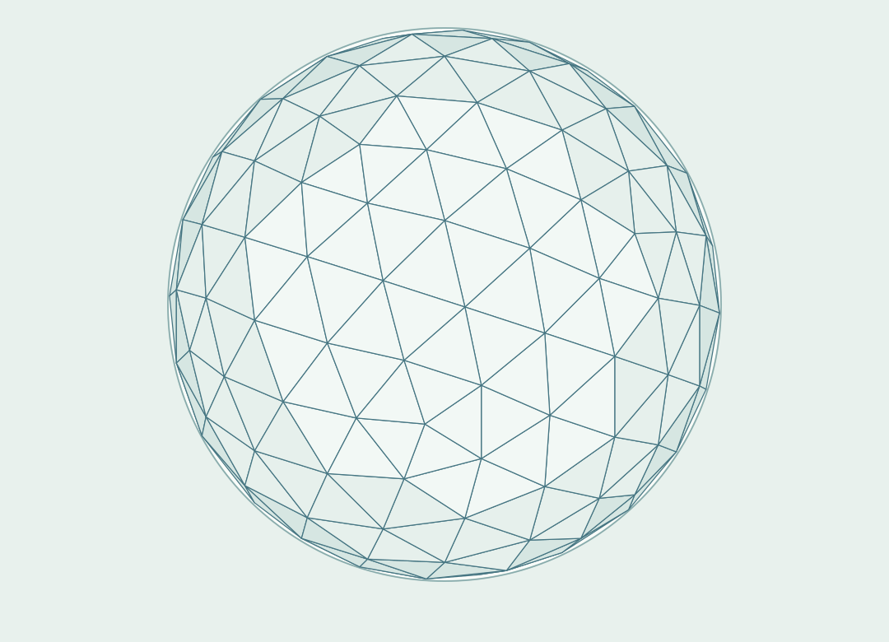
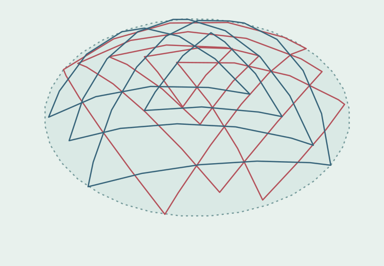

Geometric analysis
Translate drawings, proportional systems and design constraints into computable mathematical specifications. Check consistency, intersections, edge cases and alternative configurations.
Mathematical and computational expertise for artists, designers, architectural creatives and specialist makers translating complex forms into precise, reproducible models.
From intricate constrained patterns to curved-surface constructions and geodesic meshes, I develop the mathematics and custom tools that help creative concepts move toward practical prototypes.

A small, defined assignment can establish whether an idea is mathematically coherent and identify the computations needed to develop it further.
Translate drawings, proportional systems and design constraints into computable mathematical specifications. Check consistency, intersections, edge cases and alternative configurations.
Explore spherical forms, great-circle constructions, polyhedral and geodesic meshes, symmetry systems and mathematically defined patterns using tailored Python workflows.
Produce documented calculations, reusable code, interactive geometry viewers or geometry data in agreed project-specific formats for onward development by a design or fabrication team.
Existing research projects establish the computational methods behind these services. Follow the live atlas links to inspect the interactive models yourself. These projects are not previous client commissions or construction certifications.

Independent reproduction and analysis of the Śrī Yantra constraint system, including precise geometric intersections, verified constraints and a research atlas of 128 distinct certified plane configurations. The display exports precomputed vector geometry.
Computational reconstruction of the Śrī Yantra on spherical caps using great-circle geometry, independent construction checks and a 3D atlas. The published research atlas records 968 certified roots of the specified constraint subsets; these are mathematical research results, not physical prototypes.
Python research implementations for parameterised icosahedral geodesic meshes, Goldberg polyhedra and subdivision of convex polyhedra. These supply a basis for investigating non-standard dome and sculptural configurations; build-ready fabrication details require a separate project-specific development and validation stage.
Research software for high-dimensional lattice projections, rotation searches and interactive spatial visualisation, including a public 3D globe with compare modes and reproducibility checks. The scientific interpretation of planetary alignments is separate from these transferable computational tools.
The initial goal is to find the smallest useful mathematical study—not to sell a large software project before its value is established.
Identify the concept, constraints, intended material or form, and the decisions the computation needs to inform.
Agree a fixed brief, deliverables and fee: for example, a feasibility report, mathematical prototype, or parametric model.
Provide agreed outputs, assumptions, limitations, and a proposed route to any subsequent prototype or fabrication phase.
I am an independent researcher with a background in fundamental physics and space science. My work combines mathematics, Python scientific computing, geometric reconstruction, numerical checking and interactive software.
I collaborate remotely with small creative businesses whose projects call for a mathematical specialist—without requiring them to employ a full-time computational designer.
Services concern mathematical models and exploratory prototype support. Structural design approval, building regulation compliance and safety certification remain the responsibility of appropriately qualified professionals.
“Preserve the creative idea. Make its geometry precise enough to test, communicate and develop.”
Send a short description or sketch of the concept, the difficulty you're facing and the outcome you're looking for. I can suggest a narrowly scoped paid study if there is a good fit.